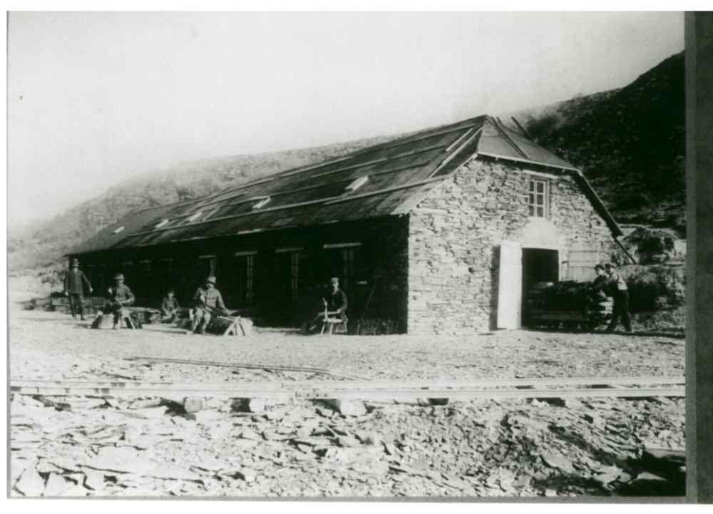

<div data-role="page" id="betonsteinwerk">
    <div data-role="header" data-add-back-btn="true">
        <h1>Grubenwanderweg: Betonsteinwerk</h1>
    </div>

    <div role="main" class="ui-content">
        <div data-role="collapsible-set">

            <div data-role="collapsible" data-collapsed="false">
                <h3>Geschichte</h3>
                <p>Die Grube ...</p>
            </div>
            
            <div data-role="collapsible">
                <h3>Spalth&uuml;tte</h3>
                <p></p>
            </div>
            
        </div>
    </div>

    <!--div data-role="footer">
        <p><a href="#main" data-direction="reverse" class="ui-btn ui-shadow ui-corner-all ui-btn-b">Inhaltsverzeichnis</a></p>
    </div-->
</div>